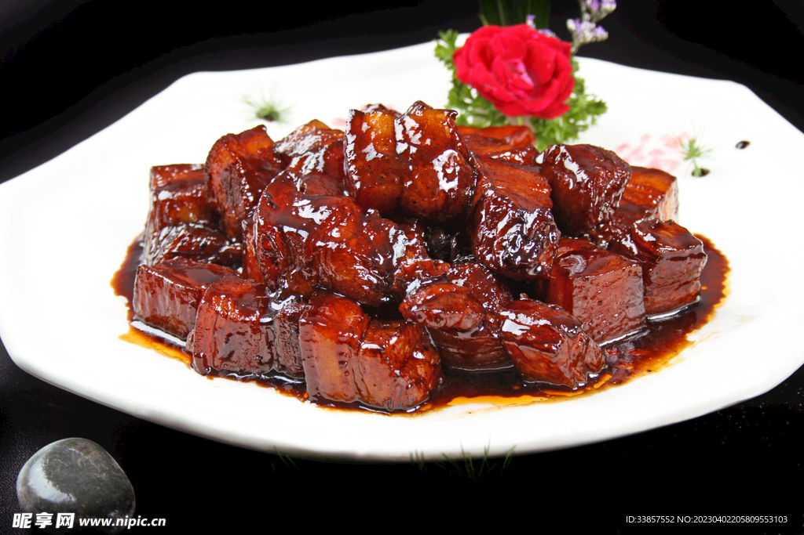
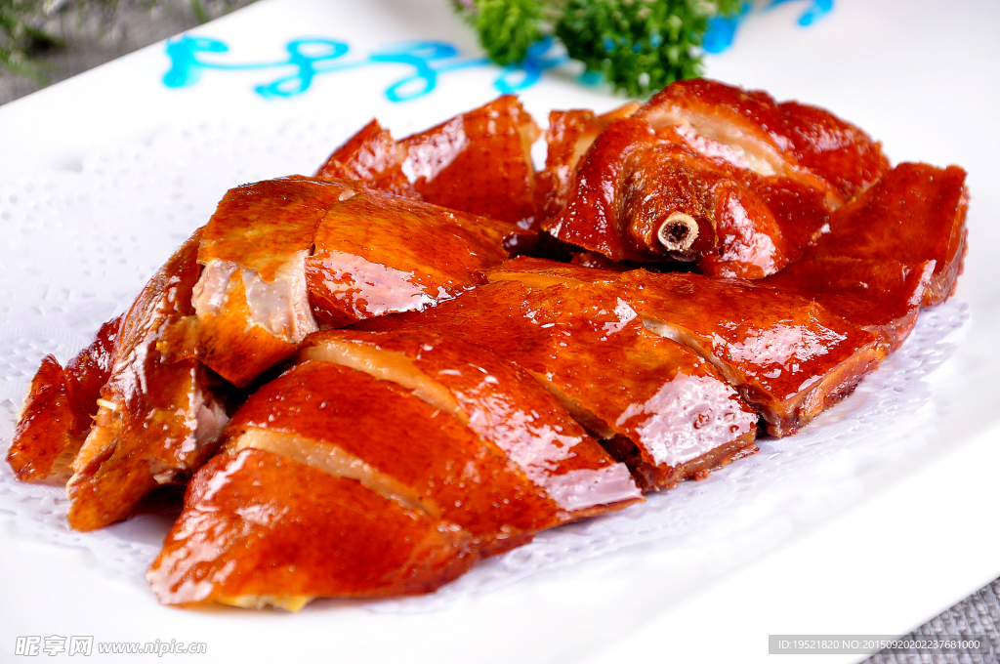
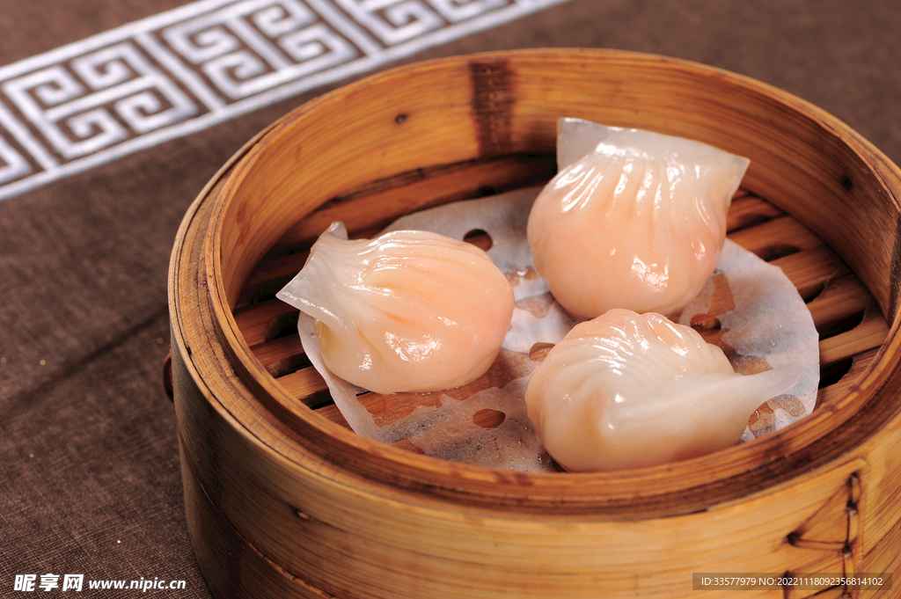
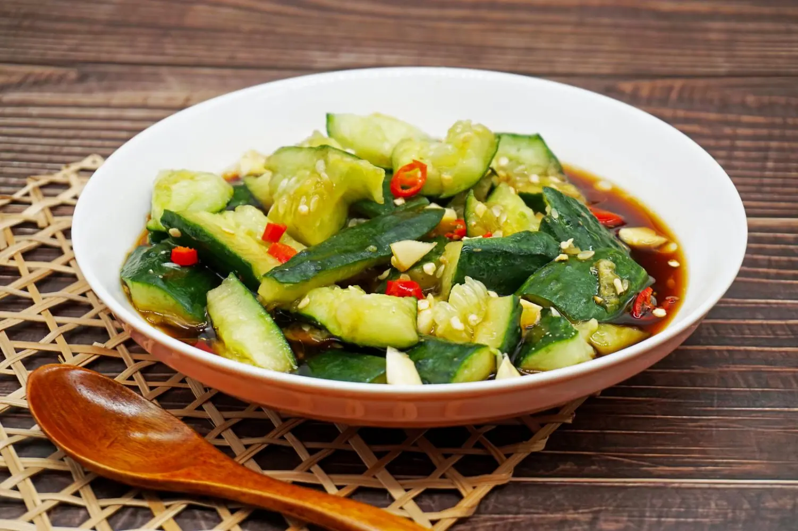

秘制红烧肉肥而不腻，入口即化¥58
面向堂食场景的一体化点餐系统。顾客在小程序完成选桌、点菜、支付与订单追踪，商家在 Web 后台管理菜品、订单和经营数据。



这里是可交互的静态演示。切换分类、添加菜品，购物车金额会实时更新；不连接数据库也能直观看到核心前端体验。
可操作演示
点击右侧菜品的加号，体验真实的购物车计价逻辑。
将订单流转、经营概览、热销排行与桌台状态集中呈现，让商家能更快发现待处理事项与经营趋势。

拍黄瓜已售 29 份¥522明炉烧鸭 ×1、红烧肉 ×2、白米饭 ×6
水晶虾饺 ×2、清远白切鸡 ×1、杨枝甘露 ×4
金牌烧鹅 ×1、卤水拼盘 ×1、鲜菇西兰花 ×2
本店招牌菜，外酥里嫩
肥而不腻，入口即化
皮薄透亮，虾肉弹牙
从顾客入座到订单完成，每一步都有明确的系统状态与对应操作，形成前后台协同的完整业务闭环。
输入桌号与人数，建立本次堂食会话。
分类浏览、推荐菜品与购物车实时计价。
生成订单，保存菜品明细和用餐备注。
接单、制作、上菜与完成状态顺序流转。
原生微信小程序负责顾客体验，Web 管理端承载商家操作，Express REST API 统一处理业务数据，MySQL 持久化保存订单、菜品与桌台信息。
在 GitHub 查看项目结构 ↗